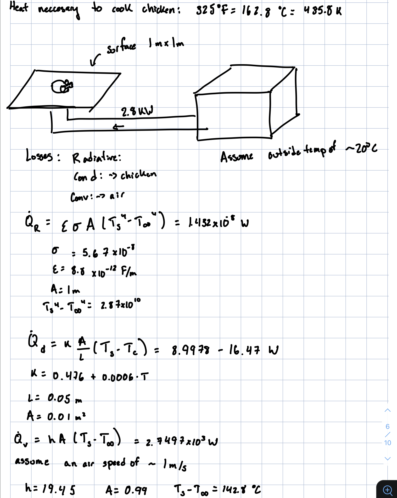
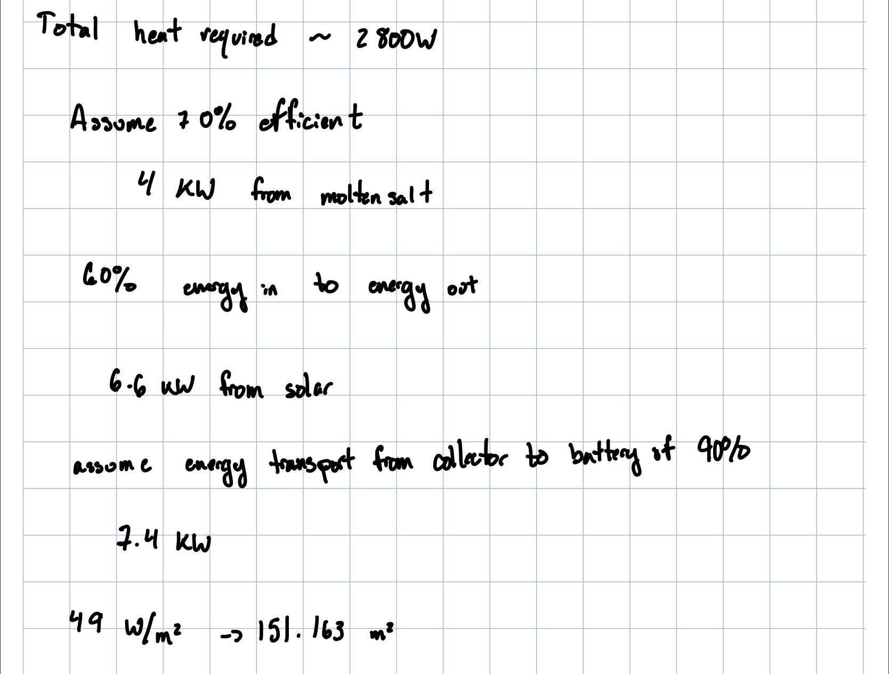

<topbar style="display:none;">
<item><a href="../index.html">Home</a></item>
<item><a href="../about.html">About</a></item>
<menu name="Updates">
<item><a href="../week-1/index.html">Week 1</a></item>
<item><a href="../week-2/index.html">Week 2</a></item>
<item><a href="../week-3/index.html">Week 3</a></item>
<item><a href="../week-4/index.html">Week 4</a></item>
<item><a href="../week-5/index.html">Week 5</a></item>
<item><a href="../week-6/index.html">Week 6</a></item>
<item><a href="../week-7/index.html">Week 7</a></item>
<item><a href="../week-8/index.html">Week 8</a></item>
<item><a href="../week-9/index.html">Week 9</a></item>
<!-- <item><a href="#">Final Project</a></item> -->
</menu>
</topbar>
<!-- This is a comment, it is ignored by the compiler/interpreter -->
## Week 7 - Prototype refinements, and Concept expansion
</br>
<h4> Cooking Sub-Team</h4>
Moving into week seven, the cooking team has been functionally disbanded and the work of the cooking team divided between
design integration, and energy collection.
<h4> Design Integration Team</h4>
The Design Integration team focused mainly on the integration of energy collection and energy storage in week six, breaking
into sub-sub-teams focused on moving the collector, and transporting the energy from the energy collection device to
the energy storage device.
<h4> Energy Transport Methods</h4>
My portion of the design integration team was mostly focused on transporting the collected energy from the solar collector
to the molten salt battery. Based on the parabolic shape chosen by the energy collection team, we have determined that
the standard method of focusing all collected light to a single reflector placed above the center of the solar collector.
The more challenging part of the energy transfer comes in how we direct the beam of collected light into the molten
salt battery. We have determined that a reflective tunnel is most likely the best method of this transport, as it avoids
the issues of needing to overly concentrate the beam of light which would arise from using fiber optics, and it avoids
the potential beam diffusion and safety hazards of simply having the beam shoot uncovered directly through air.
A mock up of what the tunnel might look like connecting the collector and the battery is shown below (not to scale).
<img src="./solar tunnel.jpg" alt="solar tunnel" width="200"/>
<h4> Energy Collector Size Requirements</h4>
Determining the size of the energy collector which we will need is integral to the design which solar collection decides
on using for constructing the solar collector. Preliminary calculations based on initial constraints given by the cooking
team yielded a need for 7.4 kW of steady energy being delivered from the solar collector, as shown in the calculations
below.


However, as only around 20 W of this were dedicated to the actual cooking of the chicken, decreasing
the size of the cooking surface to one or two "burners" would greatly reduce convective losses, thereby cutting down our
energy requirements to closer to 1kW, which could provide a viable solution to this issue.
---
Precedent websites:
* <a href="https://inhabitat.com/worlds-first-molten-salt-solar-plant-produces-power-at-night/">Molten Salt Power Plant</a>
* <a href="https://www.energy.gov/energysaver/solar-water-heaters">Solar Water Heater</a>
* <a href="https://www.energy.gov/eere/solar/photovoltaics">Photovoltaics</a>